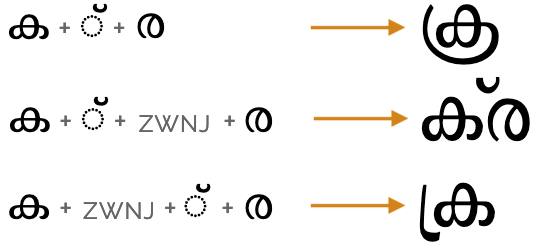
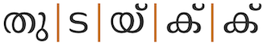

This page brings together basic information about the Malayalam script and its use for the Malayalam language. It aims to provide a brief, descriptive summary of the modern, printed orthography and typographic features, and to advise how to write Malayalam using Unicode.
Sample
Select part of this sample text to show a list of characters, with links to more details. Source
Change size: 28px
വകുപ്പ് 2. ജാതി, മതം, നിറം, ഭാഷ, സ്ത്രീപുരുഷഭേദം, രാഷ്ട്രീയാഭിപ്രായം സ്വത്ത്, കുലം എന്നിവയെ കണക്കാക്കാതെ ഈ പ്രഖ്യാപനത്തില് പറയുന്ന അവകാശങ്ങള്ക്കും സ്വാതന്ത്ര്യത്തിനും സര്വ്വജനങ്ങളും അര്ഹരാണ്. രാഷ്ട്രീയ സ്ഥിതിയെ അടിസ്ഥാനമാക്കി (സ്വതന്ത്രമോ, പരിമിത ഭരണാധികാരത്തോടു കൂടിയതോ ഏതായാലും വേണ്ടതില്ല) ഈ പ്രഖ്യാപനത്തിലെ അവകാശങ്ങളെ സംബന്ധിച്ചേടത്തോളം യാതൊരു വ്യത്യാസവും യാതൊരാളോടും കാണിക്കാന് പാടുള്ളതല്ല.
Usage & history
Malayalam script is used to write the Malayalam language of Kerala state, and spoken by 35 million people including the diaspora, and the script is used for another 10 minority languages, according to the Ethnologue. It is also widely used for writing Sanskrit texts in Kerala.
മലയാളലിപിmlyāɭlipimələjɑːɭə lɪpɪMalayalam script
Originally descended from Bhrami, the Malayalam script is a Vatteluttu alphabet extended with symbols from the Grantha alphabet to represent Indo-Aryan loanwords. Throughout its history, it has absorbed words from Tamil, Sanskrit, Arabic, and English.
In the 1970s and 1980s, Malayalam underwent orthographic reform due to printing difficulties. A significant change involved the introduction of a visible virama (chandrakkala) rather than conjunct forms, and simplification of a number of forms, including consonant plus -u/-uu combinations.
The script is an abugida. Consonants carry an inherent vowel which can be modified by appending vowel signs to the consonant. See the table to the right for a brief overview of features for the modern Malayalam orthography.
The Malayalam script was significantly simplified at the beginning of the 1970s. Prior to the orthographic reform there were many more ligated forms. In particular, the vowels u/ū and r in 2nd position in a consonant were reduced from ligated forms to simple, unchanging glyphs alongside a consonant.
Generally, words are separated by spaces, however the number of characters between spaces can be quite high as sometimes spaces are used to indicate phonological pauses, rather than lexical boundaries.
Consonant clusters are typically indicated in modern Malayalam using the visible chandrakkala mark (virama), which indicates that no vowel follows a consonant. Conjunct forms are also expressed using stacked consonants, and conjoined consonants, where the chandrakkala is still used but hidden, and special chillu shapes. ❯ clusters
As part of a cluster, RA has special forms. As a medial consonant in the modern orthography it appears as a simple glyph to the left of the letters spoken before it. When initial in the cluster its glyph includes a cillu hook at the top right. There are also special rules involving clusters of multiple RA letters.
Syllable-final consonant sounds may be represented by 2 dedicated combining marks (anusvara & visarga), but are generally ordinary consonants with chandrakkala, or 6 chillu forms. The word-final virama sometimes represents a half-u sound, rather than completely killing the inherent vowel. Because of this, Malayalam uses a set of syllable-final consonants called chillus that have no vowel sound associated with them. ❯ finals
The only composite vowels are those created by decomposition of the circumgraphs, and involve 2 glyphs, one on each side of the base consonant(s). ❯ encoding
Click on the sound groups to see where else in the document each of the sounds are referred to.
Phones in a lighter colour are non-native or allophones. Source Wikipedia.
Vowel sounds
Plain vowels
Diphthongs
Consonant sounds
labial
dental
alveolar
post-
alveolar
retroflex
palatal
velar
glottal
stops
pb
td
t
ʈɖ
kɡ
aspirates
pʰbʰ
tʰdʰ
ʈʰɖʰ
kʰɡʰ
affricates
t͡ʃd͡ʒ
aspirates
t͡ʃʰd͡ʒʰ
fricatives
f
s
ɕ
ʂ
h
nasals
m
n̪
n
ɳ
ɲ
ŋ
approximants
ʋ
l
ɻɭ
j
trills/flaps
ɾ
ɽ
Tone
Malayalam is not a tonal language.
Structure
tbd
Vowels
Inherent vowel
ക
kaU+0D15 MALAYALAM LETTER KA
a following a consonant is not written, but is seen as an inherent part of the consonant letter, so ka is written by simply using the consonant letter.
Vowel absence & half-u
ക്
kU+0D15 MALAYALAM LETTER KA + U+0D4D MALAYALAM SIGN VIRAMA
Malayalam uses ് [U+0D4D MALAYALAM SIGN VIRAMA] (in Malayalam called ചന്ദ്രക്കലcn͓d͓rk͓kl (candrakkala)ʧand̪r̪akkala) to kill the inherent vowel after a consonant, eg. the following explicitly represents just the sound k.
However, in modern text, at the end of a word the combination ക്k͓ may also represent the sound kə̆ or kɨ̆ (depending on dialect). The transcription for this is usually ŭ, and it is called half-u.
In older documents the half-u was typically written with a u vowel sign plus chandrakkala, which is not ambiguous. It is unusual for a virama to occur after a vowel sign, like this. പാലു്
The Unicode Standard provides examples of half-u occurring in positions that are not word-final (that is, not immediately before a space), eg. ഐശീല്ം In another example, the chandrakkala is attached to an independent vowel letter, and overrides the sound of that letter, eg. എ്ന്നാ
The chandrakkala is always written after any vowel sign.
See also clusters, where the chandrakkala can be hidden between consonant clusters, and finals.
Vowel signs
Non-inherent vowel sounds that follow a consonant are represented using vowel signs, eg.
Malayalam vowel signs are all combining characters. In principle a single Unicode character is used per base consonant, even if the vowel signs appear on both sides of the base consonant, but 3 vowel signs decompose to more than one character. See also circumgraphs. All vowel signs are typed and stored after the base consonant, and the glyph rendering system takes care of the positioning at display time.
An orthography that uses vowel signs is different from one that uses simple diacritics or letters for vowels in that the vowel signs are generally rendered relative to an orthographic syllable, rather than just applied to the letter of the immediately preceding consonant. This means that pre-base vowel signs and the left glyph of circumgraphs are rendered before a whole consonant cluster that is rendered as a conjunct (see prebase_vowels).
Vowel signs may also be attached to digits,u,505 eg. 355ാം
The shape of the u vowel sign has changed recently, to avoid the complications of the older ligated forms. See uvowels.
കി
kiU+0D15 MALAYALAM LETTER KA + U+0D3F MALAYALAM VOWEL SIGN I
Malayalam uses the following dedicated combining marks for vowels.
ി␣ീ␣ു␣ൂ␣െ␣േ␣ൊ␣ോ␣ാ␣ ␣ൈ␣ൗ␣ൌ
In the older orthography, the u and ū vowel signs, and to some extent the i and ī signs, tend to form ligatures with the base consonant. See uvowels.
All of the vowel signs are spacing marks, meaning that they consume horizontal space when added to a base consonant.
Pre-base vowel signs
കെ
keU+0D15 MALAYALAM LETTER KA + U+0D46 MALAYALAM VOWEL SIGN E
Three vowel signs appear to the left of the base consonant letter or cluster.
െ␣േ␣ ␣ൈ
A prebase vowel, pronounced after a consonant, but rendered to the left of that consonant.details
അരികെ
These are combining marks that are always stored after the base consonant. The font places the glyph before the base consonant.
These vowel signs are placed before the start of an orthographic syllable. This means that a word with a consonant cluster at the start separates the pre-base vowel from the position where it is pronounced by more than one consonant character (see fig_prebase).
A prebase vowel, pronounced after a consonant cluster, but rendered to the left of the conjunct.details
ഇദ്ദേഹം
However, if the cluster is split by a visible virama, this creates two syllables and the pre-base vowel sign appears after the consonant with the virama. If you click on the example below, you'll see that the characters and code point orders are the same as for the previous example (apart from the addition of the ZWNJ to force the virama to appear), but the location of the pre-base vowel sign is now immediately before the consonant after which it is pronounced.
The same word, but without the conjunct. The vowel is now rendered to the left of the last consonant in the cluster.
Circumgraphs
കൊ
koU+0D15 MALAYALAM LETTER KA + U+0D4A MALAYALAM VOWEL SIGN O
Three vowels are produced by a single combining character with visually separate parts, that appear on opposite sides of the consonant onset.
ൊ␣ോ␣ ␣ൌ
A circumgraph vowel: a single code point with glyphs on both sides of the consonant after which it is pronounced.details
All of these circumgraphs can be written as a single character, or as two. Whichever approach is used, the vowel signs must be typed and stored after the consonant characters they surround, and if the vowel signs are decomposed, they must be typed and stored in left to right order. See encoding_circumgraphs.
Composite vowels
Composite vowels only occur in decomposed text, where the glyphs in circumgraphs are split into separate code points.
ൊ␣ോ␣ൌ
Standalone vowels
ഇ␣ഈ␣ഉ␣ഊ␣എ␣ഏ␣ഒ␣ഓ␣അ␣ആ␣ഐ␣ഔ
Malayalam represents standalone vowels using a set of independent vowel letters. For example:
എല്ലാ
ഓടുക
സിമേഈ
The set includes a character to represent the inherent vowel sound.
Vowel length
Vowel length is indicated by the vowel sign used (see combiningV).
Nasalisation
tbd
Tones
Malayalam is not a tonal language.
Vowel sounds to characters
This section maps Malayalam vowel sounds to common graphemes in the Malayalam orthography, where vs indicates a vowel sign, and s a standalone vowel. Click on a grapheme to find other mentions on this page (links appear at the bottom of the page). Click on the character name to see examples and for detailed descriptions of the character(s) shown.
Sounds listed as 'infrequent' are allophones, or sounds used for foreign words, etc.
Clusters of consonant letters at the beginning of an orthographic syllable occur in Malayalam, and they are handled as described in the section clusters.
Special behaviours include handling of RA at the beginning of an orthographic syllable (see rconjuncts).
Final consonants
Chillus
ൿ␣ൻ␣ൺ␣ർ␣ൽ␣ൾ
Words ending with chandrakkala may be pronounced with a half-u sound after. In order to indicate a consonant with no following vowel sound at all the following chillu (or cillakṣaram) characters can be used, eg. വില്ലൻ
In older Unicode text the first 5 chillus in the list above were written using the combination consonant+VIRAMA+ZWJ, but since the introduction of the chillu characters in Unicode v5.1 these precomposed characters are recommended.
Anusvara & visarga
ം␣ഃ
Malayalam also uses the anusvara and visarga as syllable-final characters, eg. ദുഃഖം
The anusvara normally represents the sound m, but may be assimilated to another nasal consonant. It can be used multiple times after a vowel,u,504 eg. ഈംംംംị̄m̽m̽m̽m̽
Consonant clusters
The absence of a vowel sound between two or more consonants is visually indicated in one of the following ways.
In Unicode, the stacking and conjoining behaviour is achieved by adding ് [U+0D4D MALAYALAM SIGN VIRAMA] between the consonants. The font hides the glyph automatically.
Traditional fonts have more ligatures than modern ones. There doesn't appear to be much in the way of a systematic approach to shaping. With a few exceptions, the conjuncts are specific to particular pairs of characters.
The link at the beginning of this section shows all combinations of two consonants and allows you to observe the effect of changing the font. Versions of the table with conjuncts highlighted are available for Noto Serif Malayalam and Thoolika Traditional Unicode (part 1),
(part 2). The split for the Thoolika font is stacked, etc in part 1, and using chillu shapes in part 2. The number of conjuncts is 135 and 219+156, respectively.
Sequences involving more than two consonants in a cluster can combine a variety of methods. The example in to_india shows 3 conjoined consonants in the middle, and a conjoined cluster stacked below another letter at the end.
The word ഇന്ത്യയ്ക്ക്ịn͓t͓yy͓k͓k͓to India in the Thoolika Traditional Unicode font.
Visible chandrakkala
This was promoted as the default by the orthographic reforms of the 1970s. It is also the fallback if the font doesn't contain conjunct forms for a particular cluster of consonants.
Examples include
ആഴ്ചഗുല്ഫംനമസ്തേ
Stacking
The non-initial consonant is drawn below the initial consonant, and with a slightly different shape.
The following list shows stacked conjuncts in the Noto Serif Malayalam font (unless you changed the font for examples on this page).
Stacks tend to be particularly common for geminated consonants, even when those consonants don't participate in other conjunct pairings. In 3 such cases, the second consonant is often represented by a small triangle.
Otherwise, the subjoined consonant may be a reduced version of the original, or may be ligated. Note that LA has a very different shape from normal when in subjoined position.
Conjoined consonants
Conjuncts where the consonants remain side-by-side typically merge the shapes of the consonants.
The following list shows conjoined conjuncts in the Noto Serif Malayalam font (unless you changed the font for examples on this page). To see the original shapes, click on the conjunct.
The isolated, pre-base shape for RA was introduced by the reformed orthography. In the old orthography RA as the second element in a conjunct was represented by a ligated swash below the initial consonant.
Examples of consonant+RA ligatures in the old orthography.
Chillu-style initials
In some fonts the initial consonant in a cluster may take a chillu shape, followed by an ordinary glyph for the second character.
In the Thoolika Traditional Unicode font this applies to the following consonants in initial position.
ക␣ണ␣ന␣ര␣ല␣ള
conjunct_chillus shows the same sequence of characters in the Thoolika Traditional Unicode font. Note how the shape of the second consonant remains the same as normal - there is no ligation or repositioning. The examples in conjunct_chillus all use SHA in the second position. Note that the chillu code points are not used here – this is just font styling on normal consonants.
Chillu-style initials used in a modern font (top) and traditional font (bottom) for consonant clusters.
Before the 1970s, however, a dot or small vertical stroke was used over the following consonant, in a similar way to the repha in other indic scripts, eg. ൎയ The character ൎ [U+0D4E MALAYALAM LETTER DOT REPH] is used to reproduce this.
This character is not a combining character. It is typed and stored in the same place as you would expect to find the RA + VIRAMA, and then the font needs to position the glyph over the following consonant.
Non-initial RAര [U+0D30 MALAYALAM LETTER RA] when non-initial in a cluster is displayed to the left of the other consonant(s) in the reformed orthography, eg. ക്രk͓rThis transposition is done by the font – the typed and stored order remains the same as the spoken order.
When RA follows more than one consonant, it is displayed to the left of the cluster, not just to the left of the preceding consonant, eg. ന്ദ്രn͓d͓r in
ചന്ദ്രക്കല
The same word could be spelled
പാററpāṙṙ
and until the 1960s, when the stacked version began to appear, it would have been spelled that way, but this would be ambiguous,u,506 cf.
ടെംപററി
It would be particularly ambiguous when there are more than 2 RRA characters side by side, eg. compare
കിലോമീറ്ററുകൾകിലോമീറററുകൾkilōmīṙṙṙukɭ̽
If a word with the sound tt is spelled using an unstacked pair of these characters, the pair acts as a single unit with pre-base vowels, eg. മാറെറാലി To achieve the correct positioning of vowel signs here, however, it is necessary to use the decomposed forms of the vowel (see the transcription). Otherwise you would end up with മാററൊലിmāṙṙoli where the pre-base part of the vowel is in the wrong place.
Similarly, ൻ്റn͓̽ṙ is always pronounced nta, eg.
ആൻ്റോ
According to the Unicode Standard, an alternative spelling exists without the stack, , but this can also lead to ambiguityu,506, ie. ആൻേറാận̽ēṙāaːntoː
Note that again we had to split the vowel.
Consonant length
Gemination and consonant lengthening are handled using the normal approach to consonant clusters (see clusters).
Consonant sounds to characters
This section maps Malayalam consonant sounds to common graphemes in the Malayalam orthography Click on a grapheme to find other mentions on this page (links appear at the bottom of the page). Click on the character name to see examples and for detailed descriptions of the character(s) shown.
Sounds listed as 'infrequent' are allophones, or sounds used for foreign words, Sanskrit, etc.
The items in the list below are rare and used only to write Sanskrit in Malayalam.u,501
ൄ␣ൢ␣ൣ
Symbols
tbd
Encoding choices
This section looks at alternative strategies for typing and storing text in Malayalam, taking into consideration the effects of normalising the text using Unicode Normalisation Form D (NFD), and Normalisation Form C (NFC).
Encoding circumgraphs
The 3 circumgraphs can be written as a single character, or as two characters (in decomposed text).
The single code point per vowel sign is the form preferred by the Unicode Standard and the form in common use for Malayalam. The parts are separated, however, in Unicode Normalisation Form D (NFD), and recomposed in Unicode Normalisation Form C (NFC), so both approaches are canonically equivalent.
Whichever approach is used, the vowel signs must be typed and stored after the consonant characters they surround. In the case of decomposed vowel signs, the order is also important and must be as shown above.
In some cases, visually similar or identical glyph patterns can be made from a sequence of code points rather than the single code point that Unicode provides. These are not made the same by normalisation, and they are not semantically equivalent. These inappropriate sequences should be avoided because they will cause the meaning of the text to change; searches, matching and other aspects of the text will fail to be understood by the application or the font. In the table below, the single code point on the left should be used, and not the sequence on the right. In some cases, fonts will indicate that there is a problem by forcing the appearance of a dotted circle or otherwise failing to render the text correctly, but this may not always be the case.
In older Unicode text chillu letters were written using the combination C+VIRAMA+ZWJ, but since the introduction of the chillu characters in Unicode v5.1 these new precomposed characters are recommended. The sequences are not canonically equivalent. The default Noto font used for this page doesn't render all the glyph alternatives in this table the same, but older fonts such as Malayalam MN and ThoolikaTraditionalUnicode do.
This section brings together information about the following topics:
writing styles;
cursive text;
context-based shaping;
context-based positioning;
baselines, line height, etc.;
font styles;
case & other character transforms.
The orthography has no case distinction, and no special transforms are needed to convert between characters.
Context-based shaping & positioning
Malayalam is not cursive, but display technology needs to provide shaping for conjunct formation.
Display technology must correctly position pre-base vowels to the left of the consonant or consonant cluster, and place the separate glyphs of 2-part vowels around those also.
It must do a similar thing for display of RA using the orthographic reforms.
Ligated forms of consonant plus -u (top) and -ū (bottom). The far left shows ordinary forms.
During orthographic reforms in the 1970s and 1980s a simpler approached was introduced, to make printing easier. Both vowels were represented by an unchanging, post-base vowel sign as shown below. No change is needed to the underlying code points in Unicode, this is purely a font difference.
ചു␣കു␣ഗു␣ഛു␣ജു␣ണു␣തു␣നു␣ഭു␣രു␣ശു␣ഹു
Explicit shaping controls
Assuming that you have fonts that produce the expected behaviours, the Unicode Standard describes the use of the joiner characters as follows:u,505

Uses of ZWNJ (zero-width non-joiner) in Malayalam.
U+200D ZERO WIDTH JOINER (ZWJ) can be used before the chandrakkala to produce a traditional conjunct form in fonts that produce the open form by default but have the glyphs for the traditional forms too.
In many cases, grapheme clusters can be used to segment Malayalam words, since the virama is often visible and in principle allows for a segment break immediately (like Tamil). However, consonant cluster sequences often form conjuncts which should not be broken during edit operations such as letter-spacing, first-letter highlighting, and in-word line breaking. For the operations mentioned, one needs to segment the text using orthographic syllables.
The choice of visible virama vs. conjunct tends to vary from sequence to sequence and from font to font, but given that there is only one Malayalam virama, the application needs to interpret the virama in two different ways for segmentation: (1) as a simple vowel-killer, and (2) as a conjunct initiator. Choosing the right behaviour requires the application to understand the rendered glyphs, but this is asking a lot of an application.
The Malayalam virama (chandrakkala) is ് [U+0D4D MALAYALAM SIGN VIRAMA],
which has an Indic Syllabic Category of Virama.
Grapheme clusters
Base ZW(N)J? Combining_mark*ZW(N)J?
Combining marks may include one of the following types of character.
Dependent vowels [13] (see combiningvowels) There is usually only one vowel sign per base consonant, however in decomposed text circumgraphs are represented by 2 combining characters. Vowel signs may also be attached to numbers (see vowelsigns).
Final consonants [2] (see finals) One of 2 possible combining marks, at the end of a grapheme cluster sequence. May also occur after independent vowels.
Virama (chandrakkala) [1] (see anusvara_visarga and absence) The chandrakkala is used between consonants in a cluster, however sometimes it is simply rendered as a diacritic over the non-final consonant(s) in a cluster, but other times it causes conjunct creation and is invisible (see orthographicS). It is also used (usually at the end of a word) to indicate the half-u vowel sound. In older texts this would follow the U vowel sign. Finally, it may also be used to modify a vowel sound, such as in the 3rd example below.
Placing a ZWNJ before the chandrakkala is supposed to produce the modern 'open' form of the conjunct in fonts that would otherwise produce a traditional conjunct (see joiner). A ZWNJ can also be used after a chandrakkala to prevent the formation of a conjunct form.
ZWJ can be used before the chandrakkala to produce a traditional conjunct form in fonts that produce the open form by default but have the glyphs for the traditional forms too (see joiner).
The following examples show a variety of grapheme clusters, several of which show the virama used in a different way from its use in other words:
Click on the text version of these words to see more detail about the composition.
കാഴ്ച
കോത്
എ്ന്നാ
നമ്മൾ
നല്ലത്
നമസ്തേ
In many cases a non-final consonant in a cluster is these days rendered using a special chillu codepoint, rather than a consonant with virama. Chillus are also used for word final consonants that are not followed by a vowel. These chillu characters stand alone as grapheme clusters. See the example below, where the 2nd and final graphemes are chillus.
പെൻസിൽ
Larger typographic units
(Consonant Chandrakkala)* Grapheme_cluster
Malayalam commonly stacks or conjoins glyphs, to form conjuncts. The conjuncts represent consonant clusters.
Grapheme clusters terminate after a sequence of marks that ends with a chandrakkala, but editorial operations that change the visual appearance of the text, such as letter-spacing, first-letter highlighting, line-breaking, and justification, should never split conjunct forms apart. For this reason, an alternative way of segmenting graphemes is needed. This may not apply, however, for some other operations such as cursor movement or backwards delete.
Where conjuncts appear, a typographic unit contains multiple grapheme clusters. The non-final grapheme clusters all end with ് [U+0D4D MALAYALAM SIGN VIRAMA], and the final grapheme cluster begins with a consonant.
The following are examples.
Click on the text version of these words to see more detail about the composition.
നമ്മൾ
നല്ലത്
അങ്കക്കളരി
Complicating factors
Malayalam has only one virama code point, but it can be used to indicate a conjunct and disappear, or it may simply be displayed as a diacritic over the non-final consonant(s) in a cluster. Often both approaches will appear in the same cluster. The codepoints in memory give no indication as to which will result – that may also vary by font. There is no additional code point, like in some Southeast Asian scripts, that users can choose to indicate that they want a visible chandrakkala rather than a conjunct.
The problem is that, in principle, you would expect line-breaks, etc. to be allowed after a consonant with a visible chandrakkala, just like in Tamil. But without a way to distinguish how the font is rendering the codepoints, this is not possible. Therefore, applications may keep cluster components together for Malayalam when the chandrakkala is visible.
The following example shows 3 chandrakkala characters that are used in different ways. The first just appears above its base, the second creates a conjunct and disappears, and the third represents a vowel sound (a completely different usage). Note that the app that generated the orthographic syllable keeps everything together as one unbreakable typographic unit.
Click on the text version of this word to see more detail about the composition.

തുടയ്ക്ക്
Same word with orthographic syllable rules applied.
Treatment as grapheme clusters rather than conjuncts can also affect vowel sign positioning. An illustration of this can be seen when a consonant cluster is followed (phonetically) by a vowel rendered as a vowel sign glyph that is displayed to the left of the base. For example, observe below how the pre-base vowel
േ [U+0D47 MALAYALAM VOWEL SIGN EE]
appears to the left of the tr conjunct, but doesn't get rendered at the beginning of the str cluster.
Click on the text version of this word to see more detail about the composition.
ഓസ്ട്രേലിയ
Same word with orthographic syllable rules applied.
Punctuation & inline features
Word boundaries
Spaces are often used between words, but it is not uncommon for writers to use spacing to indicate phonological pauses, rather than lexical boundaries.ws
Sequences of characters between spaces are often quite long in Malayalam, eg. അറിയപ്പെടുന്നുവെങ്കിലുംạ̄ṙiyp͓peʈun͓nuʋeŋ͓kilum̽
Malayalam texts use quotation marks around quotations. Of course, due to keyboard design, quotations may also be surrounded by ASCII double and single quote marks.
Spaces provide the main line break opportunities, however Malayalam is an agglutinative language and Malayalam words can be long. This can lead to large gaps during justification, and sometimes words that are longer than the available column width, so it is desirable to also hyphenate words.
Line-edge rules
As in almost all writing systems, certain punctuation characters should not appear at the end or the start of a line. The Unicode line-break properties help applications decide whether a character should appear at the start or end of a line.
The following list gives examples of typical behaviours for some of the characters used in modern Malayalam. Context may affect the behaviour of some of these and other characters.
Click/tap on the Malayalam characters to show what they are.
“ ‘ ( should not be the last character on a line.
” ’ ) . , ; ! ? । ॥ % should not begin a new line.
൹ should be kept with any number, even if separated by a space or parenthesis.
In-word line-breaks
Because of the length of Malayalam words, in-word line-breaks are very common and needed during layout, especially in narrow columns, such as newsprint.
The breaks mostly takes place at syllable boundaries, however there are also occasional exceptions and special cases. Usually, no visual marker is associated with the mid-word line break.st
Text from the Malayalam newpaper, Deshabhimani, showing hyphenated words with yellow highlighting.
Text alignment & justification
tbd
Text spacing
tbd
This section looks at ways in which spacing is applied between characters over and above that which is introduced during justification.
Baselines, line height, etc.
Malayalam uses the so-called 'alphabetic' baseline, which is the same as for Latin and many other scripts.
Malayalam characters have ascenders and descenders, and combining marks appear above and below the lettters. However, generally speaking the extensions involved don't extend far beyond those of Latin text.
To give an approximate idea, fig_baselines compares Latin and Malayalam glyphs from Noto fonts. The basic height of Malayalam letters is typically around the Latin x-height, however extenders and combining marks reach slightly beyond the Latin ascenders and descenders, creating a need for slightly larger line spacing.
Font metrics for Latin text compared with Malayalam glyphs in the Noto Serif Malayalam (top) and Noto Sans Malayalam (bottom) fonts.
fig_baselines_other shows similar comparisons for the Malayalam MN and Kartika fonts.
Latin font metrics compared with Malayalam glyphs in the Malayalam MN (top) and Kartika (bottom) fonts.
Counters, lists, etc.
You can experiment with counter styles using the Counter styles converter. Patterns for using these styles in CSS can be found in Ready-made Counter Styles, and we use the names of those patterns here to refer to the various styles.
The modern Malayalam orthography uses a native numeric style.
Numeric
The malayalam numeric style is decimal-based and uses these digits.rmcs
൧␣൨␣൩␣൪␣൫␣൬␣൭␣൮␣൯␣൦
Examples:
൧␣൨␣൩␣൪␣൧൧␣൨൨␣൩൩␣൪൪␣൧൧൧␣൨൨൨␣൩൩൩␣൪൪൪
Prefixes and suffixes
Malayalam commonly uses a full stop + space as a suffix.
Examples:
൧. ൨. ൩. ൪. ൬.
Separator for Malayalam list counters: full stop + space.
Styling initials
tbd
Page & book layout
This section is for any features that are specific to Malayalam and that relate to the following topics:
general page layout & progression;
grids & tables;
notes, footnotes, etc;
forms & user interaction;
page numbering, running headers, etc.